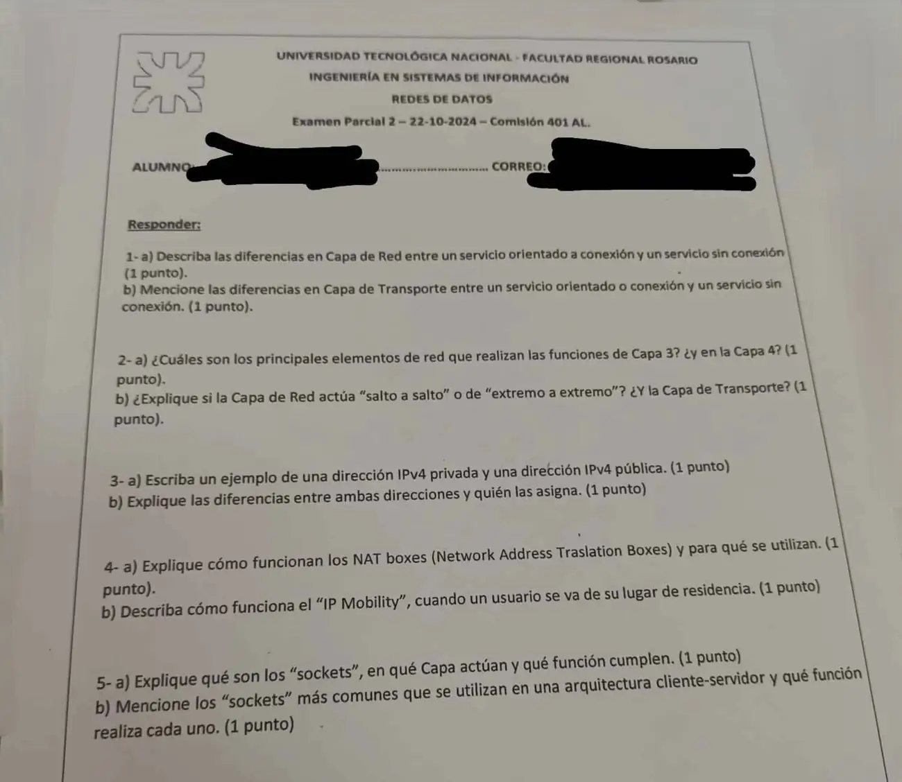

2° parcial, 22/10/2024, comisión 401
2° parcial, 22/10/2024
Enunciado


Propuesta de respuesta
Respuesta no verificada. La propuso Luta Studios con inteligencia artificial y ningún docente la revisó. Puede tener errores.
1a.
| Sin conexión, datagrama | Orientado a conexión, circuito virtual | |
|---|---|---|
| Establecimiento | No hace falta | Necesario |
| Dirección en el paquete | Origen y destino completos | Solo el número de circuito virtual |
| Memoria del router | No necesita información extra | Guarda cada circuito virtual |
| Ruta | Cada paquete, independiente | Todos por la misma ruta |
| Si falla un router | Cambia la ruta | Termina la comunicación |
| QoS y congestión | Difícil de gestionar | Se reservan recursos al establecer |
IP funciona como datagrama.
1b. En transporte, el orientado a la conexión es TCP y el sin conexión es UDP.
| TCP | UDP | |
|---|---|---|
| Conexión | Se establece con el saludo de tres vías y se cierra de ambos lados | No hay |
| Confiabilidad | Checksum obligatorio y retransmisión | Checksum opcional, sin retransmisión |
| Flujo y congestión | Ventana deslizante y AIMD | Quedan para la aplicación |
| Encabezado | 20 bytes más opciones | 8 bytes |
2a. En la capa 3, el router. Guarda cada paquete un momento, chequea errores y lo manda al puerto que indica su tabla. En la capa 4 no hay un aparato de red, trabajan los hosts, porque transporte vive en las máquinas de los extremos.
2b.
- Red, salto a salto. El router recibe el paquete, lo guarda, chequea errores y lo manda al siguiente router según su tabla. Las capas 1, 2 y 3 trabajan salto a salto.
- Transporte, de extremo a extremo. Es la primera capa que trabaja de extremo a extremo. Los routers no la miran, y por eso vive en los hosts.
3a.
- Privada. 192.168.1.10, del rango 192.168.0.0/16.
- Pública. 198.60.42.12, la de salida de la caja NAT del ejemplo del apunte.
3b. Las públicas son únicas y circulan por internet. Las asigna ICANN, que asigna las direcciones IP y los DNS. Las privadas se usan solo dentro de una organización, en los rangos 10.0.0.0/8, 172.16.0.0/12 y 192.168.0.0/16, y se pueden repetir en otra. Las elige la propia organización para su red, por ejemplo con DHCP. Para salir a internet tienen que ser traducidas por NAT en una pública.
4a. Una caja NAT está entre la red con direcciones privadas y internet. Cuando un paquete sale, cambia la IP privada de origen por la IP pública, y el puerto por uno propio que anota en una tabla. Cuando vuelve la respuesta, busca ese puerto y la manda a la máquina que corresponde. En el ejemplo del apunte, un paquete sale con IP 10.0.0.1 y puerto 5544, y pasa a internet con IP 198.60.42.12 y puerto 3344.
Se usan para que muchas máquinas con IP privada salgan a internet con una sola pública. Es criticada porque un paquete no debería cambiar su dirección en el viaje, y bloquea los paquetes entrantes como un firewall.
4b. Con IP Mobility, el móvil que se va de su red pide una dirección local, la Care of Address, y se la manda a su Home Agent, en la red de origen. Los paquetes siguen llegando a la dirección de siempre, y el Home Agent se los reenvía a la nueva. Después la comunicación sigue directa. IPv6 evita esa triangulación.
5a. Es el extremo de una conexión en la capa de transporte, el punto donde la aplicación se engancha a la red. Se identifica con la IP del host y un puerto de 16 bits, el TSAP. Un host usa varios a la vez con una sola IP. El servidor lo crea con las primitivas SOCKET, BIND, LISTEN y ACCEPT, en ese orden, el cliente usa CONNECT, y al final ambos hacen CLOSE.
5b. Las primitivas de sockets del apunte, en el orden en que se usan.
| Primitiva | Quién | Qué hace |
|---|---|---|
| SOCKET | Los dos | Crea el extremo de comunicación |
| BIND | Servidor | Le asigna su dirección local, la IP y el puerto |
| LISTEN | Servidor | Avisa que está dispuesto a recibir conexiones |
| ACCEPT | Servidor | Espera hasta que llega un pedido de conexión y lo acepta |
| CONNECT | Cliente | Pide la conexión al servidor |
| CLOSE | Los dos | Libera la conexión, de cada lado por separado |
Respuesta no verificada. Puede tener errores.
Se armó con el resumen del 2° parcial, secciones Servicios de la capa de red, Públicas, privadas y NAT, Usuarios y routers móviles, Direccionamiento y sockets y TCP y UDP, el resumen de inicio, La idea que ordena todo, y la tabla de organismos del 1° parcial.
Quedó en duda: El material no dice quién asigna las direcciones privadas; que las elija la organización, por ejemplo con DHCP, es una lectura de «se usan solo dentro de una organización». El resumen nombra las primitivas de sockets pero no explica qué hace cada una; la tabla de 5b sale de sus nombres. Compará con Servicios y Primitivas, páginas 6 y 7.
¿Cómo te fue?
Marcá cada tema del examen.
- ServiciosLos tres servicios, en 1° parcial
- DireccionesDirecciones especiales y subredes, en 2° parcial
- NATDirecciones públicas, privadas y NAT, en 2° parcial
- SocketsDireccionamiento y sockets, en 2° parcial